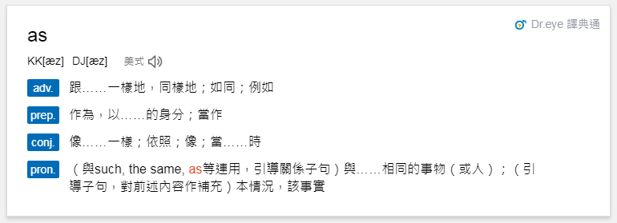

Chapter 2 R_Basic
LastUpdate: 2018-07-10
2.1 變數的賦值與基本型態
R 語言中變數 (Variable) 的賦值方式可以使用，1. <- (箭號) 以及 2. = (等號)表示。
根據 Google R Style Guide 建議使用 <- 進行變數賦值。另外，R 語言中程式的註解以 # (井號) 表示。
2.1.1 向量 (vector)
- 基本類別
- R 物件最基本的單位是向量 (vector)，以 c() 表示 (Combine)，元素與元素之間逗號分隔。
- 常用基本類別 (class)，即 1.數值向量 (numeric vector)、2. 字串向量 (character vector) 以及 3. 布林向量 (logical vector)。
# numeric vector
x <- c(4.39, 2.11, 3.17)
x [1] 4.39 2.11 3.17class(x) # 可利用class(x)查詢物件的類別[1] "numeric"# character vector，以雙引號 " " 或單引號 ' ' 註記
y <- c("apple", "book", "cat")
y[1] "apple" "book" "cat" class(y)[1] "character"# logical vector，以TRUE / FALSE 註記，亦可簡化為 T / F
z <- c(TRUE, FALSE, TRUE)
z[1] TRUE FALSE TRUEclass(z)[1] "logical"- 向量的類別轉換
- 向量物件一次只能接受一種類別，若同時在一個向量中給定多種類別，R 將會依以下順序進行自動轉換：字串 > 數值 > 布林。
- 可利用以下函數自行轉換向量的類別：as.character, as.numeric, as.logical。

# 向量只容許一種類別 (字串 > 數值 > 布林)
c(1, 2, "three") # 數值被轉換成字串[1] "1" "2" "three"c(1, 2, TRUE, FALSE) # 布林值 TRUE 被轉換成1，FALSE被轉換成0[1] 1 2 1 0c(1.1, 2.4, TRUE, FALSE)[1] 1.1 2.4 1.0 0.0c("one", 2.4, TRUE) # 所有元素都被轉換成字串[1] "one" "2.4" "TRUE"# 字串轉數字
a1 <- c("89", "91", "102")
as.numeric(a1)[1] 89 91 102# 布林轉數字
a2 <- c(TRUE, TRUE, FALSE)
as.numeric(a2)[1] 1 1 0# 數字轉布林
a3 <- c(-2, -1, 0, 1, 2)
as.logical(a3)[1] TRUE TRUE FALSE TRUE TRUE# 數字轉字串
as.character(a3)[1] "-2" "-1" "0" "1" "2" - 向量物件的簡記
- 連續整數向量可以利用 : (冒號) 簡記，譬如數列 1, 2, 3 在 R 語言中可利用 1:3 簡記。R 中的向量具有 recycling properties，便於執行四則運算。
# basic expression of integer vector
c(1, 2, 3)[1] 1 2 3# simple expression
1:3[1] 1 2 33:1[1] 3 2 1# shorter arguments are recycled
1:3 * 2[1] 2 4 61:4 + 1:2[1] 2 4 4 6c(0.5, 1.5, 2.5, 3.5) * c(2, 1)[1] 1.0 1.5 5.0 3.5# warning (why?)
1:3 * 1:2[1] 1 4 3- 元素的命名
- 在 R 語言中，可以對向量中的每一個元素命名，或者是利用函數 names 對向量元素命名，這有助於該向量的理解。
y <- c("apple", "book", "cat")
y[1] "apple" "book" "cat" y1 <- c(A="apple", B="book", C="cat")
# 等價於
# y1 <- y
# names(y1) <- c("A", "B", "C")
y1 A B C
"apple" "book" "cat" names(y1)[1] "A" "B" "C"- 取值與排序
- 利用
[ ](中括號) 與比較運算子(>, <, >=, <=, ==, !=)、邏輯運算子 (&, |) 以及負號 (-) 進行向量的取值。此外，R 也支援利用變數的名稱 (names) 來取值。
- 利用
# 1st and 3rd elements of vector
x <- c(4.39, 2.11, 3.17)
x[c(1,3)] [1] 4.39 3.17x[c(2,3,1)][1] 2.11 3.17 4.39order(x) # 依x各元素大小排序 (由小到大)[1] 2 3 1x[order(x)][1] 2.11 3.17 4.39# remove 1st elements of vector
y <- c("apple", "book", "cat")
y[c(-1)][1] "book" "cat" # using comparison and logical operators
x > 3[1] TRUE FALSE TRUEwhich(x>3) # which indices are TRUE[1] 1 3x[which(x>3)][1] 4.39 3.17x[x > 3] # simplify expression[1] 4.39 3.17y[y!="apple"][1] "book" "cat" y1["A"] A
"apple" y1[y1=="apple"] A
"apple" names(y1)[y1 == "apple"][1] "A"- 向量元素取代與新增
- 使用
[ ]進行元素的取代與新增
- 使用
y <- c("apple", "book", "cat")
y[3] <- "car" # replace 3rd element
y[1] "apple" "book" "car" x <- c(4.39, 2.11, 3.17)
x[c(1,3)] <- 0 # replace 1st and 3rd elements to 1
x[4] <- 1.19 # add 4th element to 1.19
# 等價於 c(x, 1.19)
x[1] 0.00 2.11 0.00 1.192.1.2 資料框 (data.frame)
- 資料框、資料框架、數據框 (data.frame)
- 為向量 (vector) 的一種推廣，它可以將多個相同長度 (不一定是相同類別) 的向量合併在一起 (combine by column)。
x <- c(4.39, 2.11, 3.17, 5.43)
y <- c("apple", "book", "cat", "baby")
z <- c(TRUE, FALSE, TRUE, FALSE)
df <- data.frame(v1 = x, v2 = y, v3 = z)
df v1 v2 v3
1 4.39 apple TRUE
2 2.11 book FALSE
3 3.17 cat TRUE
4 5.43 baby FALSEstr(df) # 展示物件各欄位的屬性結構 (structure)'data.frame': 4 obs. of 3 variables:
$ v1: num 4.39 2.11 3.17 5.43
$ v2: Factor w/ 4 levels "apple","baby",..: 1 3 4 2
$ v3: logi TRUE FALSE TRUE FALSEhead(df, 3) # 展示物件前 3 筆資料 v1 v2 v3
1 4.39 apple TRUE
2 2.11 book FALSE
3 3.17 cat TRUEcolnames(df) # 展示物件的欄位名稱[1] "v1" "v2" "v3"rownames(df) # 展示物件的列名稱[1] "1" "2" "3" "4"- 取值
- 如同 vector 使用
[]取值，data.frame 利用[row, col]提取物件內容。 - 表達式為 x[i, j]，表示提取 x 物件中第i列 (ith row)、第j行 (jth column) 的值
- 也可單純使用 x[i, ] 表達第i列的向量；x[,j] 表達第j行的向量。
- 中括號中可以使用條件算子進行取值。
- 另外，可以用
$(錢號) 來提取物件的特定欄位 (column)，請試著在 df$ 之後按 tab (自動完成鍵)。
- 如同 vector 使用
df[1] # select 1st column variable v1
1 4.39
2 2.11
3 3.17
4 5.43df[, 1] # select the value of 1st column[1] 4.39 2.11 3.17 5.43df[, "v1"][1] 4.39 2.11 3.17 5.43df$v1[1] 4.39 2.11 3.17 5.43df[c("v2", "v3")] v2 v3
1 apple TRUE
2 book FALSE
3 cat TRUE
4 baby FALSEdf[2, ] # select 2nd row v1 v2 v3
2 2.11 book FALSEdf[df$v1 > 3 & z==TRUE, "v2"][1] apple cat
Levels: apple baby book cat- data.frame 的合併
- 利用 rbind (上下合併)、cbind (左右合併) 對 data.frame 進行合併
x <- data.frame(Drama=c("我的自由年代", "回到愛以前"),
TV=c("三立", "台視"))
y <- data.frame(Drama=c("我的自由年代", "回到愛以前"),
Date=c("2014-02-07", "2014-01-05"),
Vol=c(12, NA),
Rating=c(2.67, 2.58))
z <- data.frame(Drama=c("16個夏天", "妹妹"),
TV=c("公視", "台視"),
Date=c("2014-11-01", "2014-10-10"),
Vol=c(16, 7),
Rating=c(2.30, 1.30))
x Drama TV
1 我的自由年代 三立
2 回到愛以前 台視y Drama Date Vol Rating
1 我的自由年代 2014-02-07 12 2.67
2 回到愛以前 2014-01-05 NA 2.58z Drama TV Date Vol Rating
1 16個夏天 公視 2014-11-01 16 2.3
2 妹妹 台視 2014-10-10 7 1.3xy <- cbind(x, y[,-1])
rbind(xy, z) Drama TV Date Vol Rating
1 我的自由年代 三立 2014-02-07 12 2.67
2 回到愛以前 台視 2014-01-05 NA 2.58
3 16個夏天 公視 2014-11-01 16 2.30
4 妹妹 台視 2014-10-10 7 1.30# 壓縮程式碼 rbind(cbind(x, y[,-1]),z)2.1.3 類別物件 (factor)
- factor
- 當一向量變數是類別型變數 (categorical data，譬如：性別、教育水準) 時，在 R 語言中以 factor 進行定義。
# variable gender with 2 "male" entries and 3 "female" entries
gender <- c(rep("male",2), rep("female", 3))
gender[1] "male" "male" "female" "female" "female"gender <- factor(gender)
gender[1] male male female female female
Levels: female malelevels(gender)[1] "female" "male" as.numeric(gender) # 1=female, 2=male internally (alphabetically)[1] 2 2 1 1 1# change vector of labels for the levels
factor(gender, levels=c("male", "female"), labels=c("M", "F"))[1] M M F F F
Levels: M F2.1.4 序列 (list)
- list
- 為 R 環境中最廣義的物件，可以將上述所有物件都包含至同一個物件下。
- 序列 (list) 的表達形式與向量類似，只是每一個元素可以是各種物件型態(vector, data.frame, list, … )。
- 基本的取值方法是[[ ]] (雙層中括號)，x[[i]] 表示list物件中第i個值。如過list物件的位置有命名，則可以用$ (錢號) 來提取物件。
L <- list(x = c(1:5), y = c("a", "b", "c"), z = df)
L$x
[1] 1 2 3 4 5
$y
[1] "a" "b" "c"
$z
v1 v2 v3
1 4.39 apple TRUE
2 2.11 book FALSE
3 3.17 cat TRUE
4 5.43 baby FALSE# teh dollar operator $ or [[]] can be used to retrieve a single element
L[[2]][1] "a" "b" "c"L$y [1] "a" "b" "c"L[["z"]] v1 v2 v3
1 4.39 apple TRUE
2 2.11 book FALSE
3 3.17 cat TRUE
4 5.43 baby FALSEL[3]$z
v1 v2 v3
1 4.39 apple TRUE
2 2.11 book FALSE
3 3.17 cat TRUE
4 5.43 baby FALSEL[c(1, 3)]$x
[1] 1 2 3 4 5
$z
v1 v2 v3
1 4.39 apple TRUE
2 2.11 book FALSE
3 3.17 cat TRUE
4 5.43 baby FALSEL[c("x", "y")]$x
[1] 1 2 3 4 5
$y
[1] "a" "b" "c"# 序列轉向量
unlist(L) x1 x2 x3 x4 x5 y1 y2 y3 z.v11 z.v12 z.v13 z.v14
"1" "2" "3" "4" "5" "a" "b" "c" "4.39" "2.11" "3.17" "5.43"
z.v21 z.v22 z.v23 z.v24 z.v31 z.v32 z.v33 z.v34
"1" "3" "4" "2" "TRUE" "FALSE" "TRUE" "FALSE" 2.1.5 文字處理
- String Manipulation
- 正規表達式 (regex) 補充教材：
r1 <- "Hello"
class(r1)[1] "character"# 單字字元個數 nchar(x)
nchar(r1)[1] 5# 單字分割 substr(x, start=n1, stop=n2)
substr(r1, start = 1, stop = 3)[1] "Hel"# 單字變更大小寫 toupper/tolower(x)
r1 <- toupper(r1)
r1[1] "HELLO"r1 <- tolower(r1)
r1[1] "hello"# 單字結合成字串 paste(…, sep="")
r2 <- "world"
paste(r1, r2, sep = ".")[1] "hello.world"paste(r1, r2, sep = " ")[1] "hello world"# 字串拆解 strsplit(x, split)
r3 <- paste(r1, r2, sep = " ")
r3[1] "hello world"r4 <- strsplit(r3, split = " ")
r4[[1]]
[1] "hello" "world"r4[[1]][2][1] "world"# 字串取代 gsub(pattern, replacement, x)
r3[1] "hello world"gsub(pattern = "ll", replacement = "oo", x = r3)[1] "heooo world"# 規則運算式 grepl(pattern,x)
r5 <- list("hello", "world")
grep("l", r5)[1] 1 2grepl("ll", r5)[1] TRUE FALSE2.1.6 特殊變數介紹
- 保留字
- NA, not vailable, 通常指遺漏值 (missing value)，可利用 is.na() 函數來判別
- numeric(0), length(numeric(0) = 0, 長度為0的數值型物件
- Inf, infinity, 無窮大
- NaN, not a number, 可利用 is.na() 函數來判別
NA # NA[1] NAc(1, NA, 4) + 1[1] 2 NA 5x <- c(4.39, 2.11, 3.17)
x[x>5] # numeric(0)numeric(0)100/0 # Inf[1] Inf-pi/0 #-Inf[1] -Inf0/0 # NaN[1] NaNInf-Inf # NaN[1] NaN
Rafe C.H. Liu (劉佳欣)
Data Thinking, Machine Learning & E-commerce expert
Contact Info | Linkedin Profile
Sepcial Thanks To Johnson Hsieh, George Chiao, Alto Li
Data Thinking, Machine Learning & E-commerce expert
Contact Info | Linkedin Profile
Sepcial Thanks To Johnson Hsieh, George Chiao, Alto Li